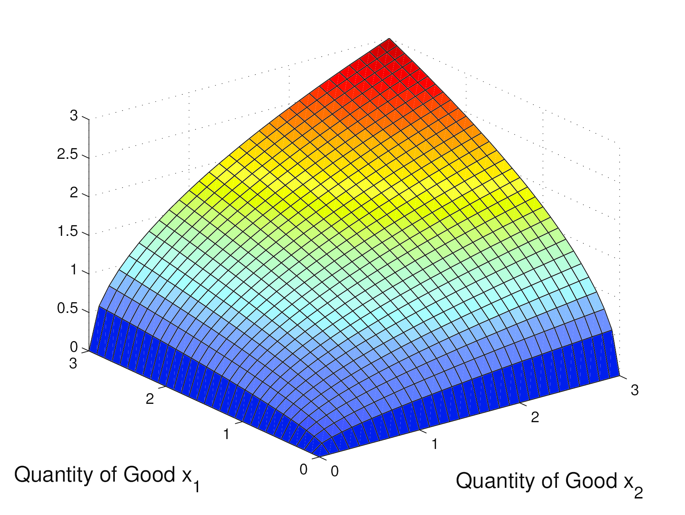
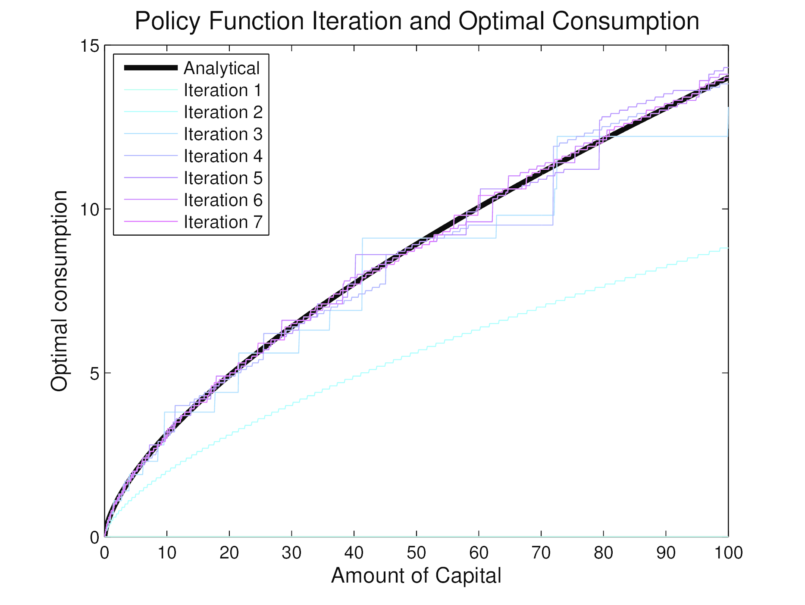
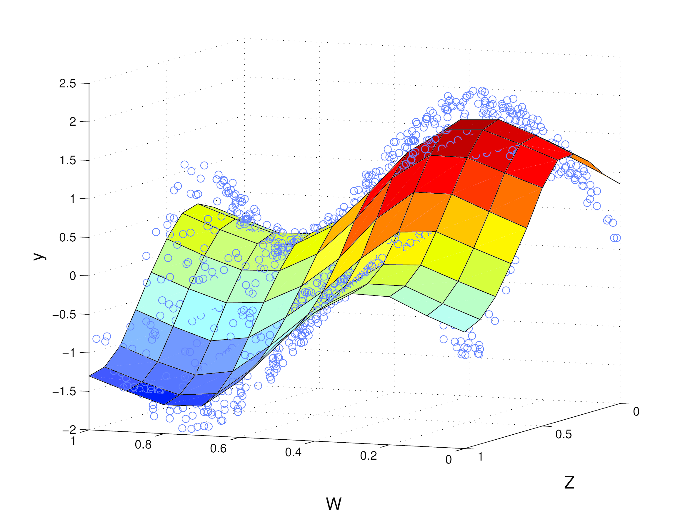
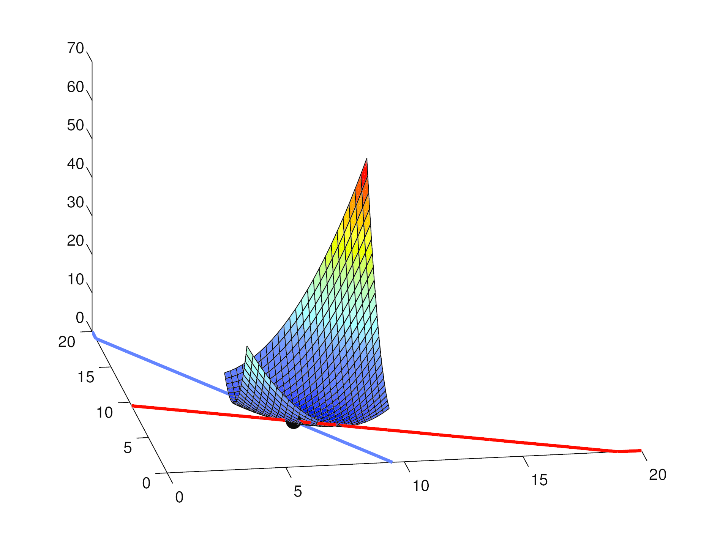
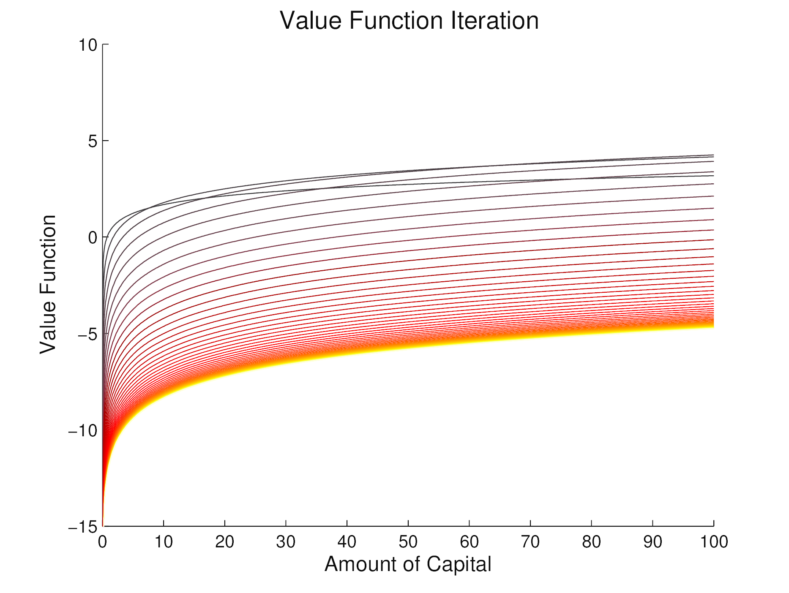

Microeconometrics and MATLAB is a textbook written for applied researchers working in the fields of microeconomics and microeconometrics. The book is a hands on guide to writing and coding your own microeconometric estimators, with a focus on the methds and areas which we come across in our daily work. Starting from a brief introduction to coding and MATLAB, we progress to learning how to code our own estimators in discrete choice, dynamic time, multidimensional space, and more. We invite you to browse the quick rundown below, or the full table of contents.
We provide this website as an online companion to the book and to support you as you work through the code and examples. Each and every function and script discussed in the book can be downloaded here. Each file (an m-file which is written for MATLAB) is individually documented and can be used for stand alone analysis, and we encourage you to test and extend these files for your own use. Files are referred to by name in the relevant chapters in the book, and are laid out in this way on the code section of this page. Further details regarding how to download and run these files directly on your own computer or server are provided there.
To quickly download all files which are used in the book, download this script, and save it in a file on your computer which is accessible from MATLAB. In MATLAB, change to the directory of the script, and type download_MM. As an example, below we have saved the download_MM.m file in the folder "~/home/MATLABbook". We change to this folder, make a new folder to store the code, and then download the code to store in this folder. All files can now be accessed by MATLAB if you go to the corresponding subfolder in the "code" folder.
cd ~/home/MATLABbook/ mkdir ~/home/MATLABbook/code download_MM('~/home/MATLABbook/code')
Alternatively, if you prefer to download the code one chapter at a time, zipped folders are available by chapter on the code section of this website. Just download these and unzip on your computer, and change to the code directory in MATLAB.